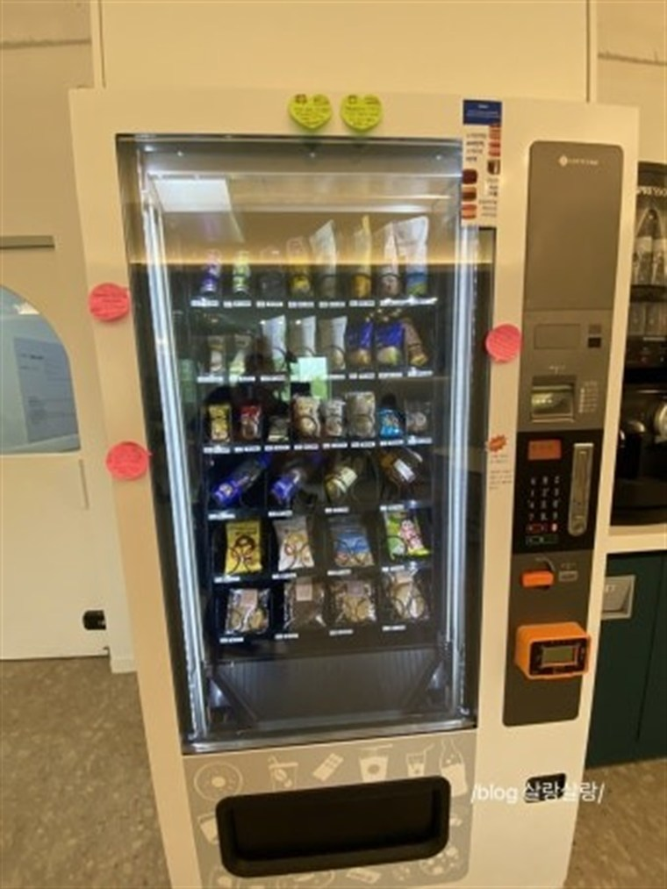

부천 무인자판기 설치 완료 — 학원가 상가 무인점포

경기 부천시 중동 학원가 상가에 무인자판기를 설치하고 왔습니다. 사장님은 상가에서 가게를 하시는 분인데, "학원 끝난 학생들이 간식·음료 사러 몰리는데 마땅한 데가 없다"며 음료·간식 자판기를 알아보셨어요. 학원이 밀집한 자리라 저녁·주말 수요가 확실했습니다.
학원가는 학생들이 짧은 쉬는 시간에 빠르게 사 가는 곳이라, 줄 안 서고 바로 뽑는 자판기가 잘 맞습니다.
어떻게 구성했나
상가 잘 보이는 자리에 멀티(복합) 자판기를 놓았습니다. 학생들이 자주 찾는 품목 위주로 구성했습니다.
• 음료자판기 — 생수·이온음료·탄산·캔커피. 학원 쉬는 시간에 가장 많이 나갑니다.
• 스넥·간식자판기 — 과자·초코바·컵라면. 저녁 끼니 대신 찾는 수요가 꾸준합니다.
결제는 카드·삼성페이·카카오페이·네이버페이·QR까지 셀프 결제로 다 됩니다. 현금 없이 카드만 대면 끝이라 학생들이 쓰기 편합니다.
앱으로 원격 관리, 설치는 반나절
매출·재고는 앱으로 원격 확인됩니다. 어떤 품목이 잘 나가는지, 언제 채워야 하는지 휴대폰으로 바로 보이니 매장에 붙어 있지 않아도 됩니다. 직접 채우기 번거로우면 위탁운영으로 맡기셔도 됩니다. 이번 현장도 콘센트가 가까워 반나절 만에 마무리했습니다.
구매·임대·렌탈, 부담 없이 시작하세요
무인자판기는 구매·임대·렌탈 세 방식이 있습니다. 목돈 없이 가볍게 시작하려면 임대·렌탈로 한 대 놓아 자리를 검증한 뒤 늘리는 걸 권합니다. 설치비는 무료, 개인사업자·법인사업자 모두 가능하고 세금계산서도 정상 발행됩니다. 중동·상동·소사·원미·역곡 등 부천시 전역에 방문합니다.
부천 무인자판기, 상담은 무료입니다
부천에서 학원가·상가·아파트·사무실·공장에 무인자판기를 놓고 싶으시거나 무인점포·무인 아이스크림 매장 창업을 준비 중이시라면 편하게 전화 주세요. 자리에 맞는 기종·품목과 예상 수익까지 함께 봐 드립니다. 전국 어디든 방문합니다.
📞 부천 무인자판기 설치 상담 010-6832-1994